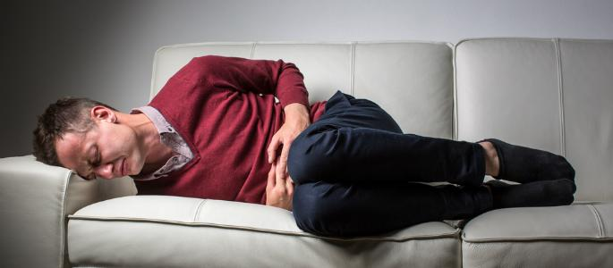

Капельница от алкогольной интоксикации на дому
Лечение алкогольной интоксикации при помощи капельного введения перепаратов
Работаем в Одессе, Киеве, Львове, Харькове, Днепре, Запорожье

Работаем в Одессе, Киеве, Львове, Харькове, Днепре, Запорожье
Наркотическая зависимость это состояние при котором характеризуется
наличие патологического влечения к веществам которые вызывают физическую
и психическую зависимость. Они поражают все органы и системы влияя на
центральную нервную систему вызывая чувство эйфории радости и
удовольствия не зависимо от реального объективного психологического
состояния пациента. Регулярное употребление наркотических средств
приводит и тяжелым и серьезным нарушениям в деятельности все организма,
что является очень серьезной угрозой для дальнейшей адекватной, а
главное качественной жизни. Проявляются тяжелые дегенеративные нарушения
психики с возникновением полной астрогнозией (потерей критики к своему
состоянию ).
UmbrellaPlus безопасная наркология предлагает вам получить качественную
помощь в нашем центре но стоит знать что лечение наркомании достаточно
сложный и длительный процесс с которым приходиться бороться не один
день. Пристрастившийся человек к любым наркотическим средствам не всегда
в силах справится самостоятельно . Помощь наркозависимого пациента для
достижения полной ремиссии. UmbrellaPlus безопасная наркология
предлагает вам получить качественную помощь в нашем центре но стоит
знать что лечение наркомании достаточно сложный и длительный процесс с
которым приходиться бороться не один день. Пристрастившийся человек к
любым наркотическим средствам не всегда в силах справится
самостоятельно. Помощь наркозависимого пациента для достижения полной
ремиссии.
Самая распространенная схема лечения это программа "12 шагов" она разработана для помощи людям Попавших в тяжелую зависимость. Была придумана в США 1930 году. Согласно статистике более 30% наших пациентов прошедших лечения и реабилитацию по программе 12 шагов удавалось войти в длительную, а кому-то в пожизненную ремиссию. Но стоит помнить что пусть к выздоровлению это равные усилия специалистов и пациента. Комплексное лечение наркозависимого пациента всегда длительное и основано на множестве факторов, но основные из которых это возраст стаж употребления вид наркотика общее состояние здоровья, а самое главное осознание проблемы. Для того что бы добиться максимального эффекта от лечения мы используем индивидуальный абсолютно разный подход лечения наркотической зависимости к каждому из пациентов. Эффективное лечение наркомана это снятие ломки в среднем это 21 день нахождения в клинике, а после Длительная реабилитация от 1 до 6 месяцев. Мы оказываем неотложную наркологическую помощь по лечению наркомании в нашем центре в таких городах как Киев Одесса Львов Запорожье Днепр Харьков Продолжительность и сроки лечения объясняться сильнейшим воздействием наркотиков на организм. Зависимость формируется в течении долгих лет стоит быть реалистами и не строить ложных иллюзий пусть к выздоровлению всегда длителен, но он есть.
Уникальность о лечении наркомании состоит в том что мы можем предложить и наблюдение других специалистов в сфере адаптации наркозависимости. После курса психо-социальный реабилитации наши пациенты всегда имеют возможность пройти другие программы по лечению наркомании. Лечение наркомании в городе Днепр Харьков Львов Запорожье Одесса Киев. Обычней распорядок наших пациентов включает занятие с психиатром, а после с психологом, тренерам по социальной адаптации и реабилитологом. Пациенты принимают участи в групповой психотерапии, арт-терапии, спорте. Если вы до сих пор не осознали надобность в неотложном лечении наркотически зависимого пациента (лечение наркомании) мы призываем вас сделать это немедленно, даже принудительно лечение при полном отсутствии желания пациента всегда имеет положительный эффект ведь в условиях исключающих употребление наркотиков пациент может прийти в осознанное состояние происходящего. И это очень важный процесс в лечении наркомании Еще одна из особенности в лечении наркомании UmbrellaPlus это то что любая реабилитация наркотически зависимого пациента проходит без участия близких людей родственников или друзей. Пациент всегда находить в новом окружении людей с такой же проблемой с целью их выздоровления это обеспечивает социальную поддержку друг друга и групповую наркотическую психотерапию. Наркологическая помощь в лечении наркомании это реальный шанс на полное выздоровление и возвращение пациента к трезвой жизни. Связаться с нами вы можете по нашей горячей линии 050-021-69-57 Наша программа частная и АНОНИМНАЯ в лечении наркомании и алкоголизма, поэтому в интересах пациента мы передаем документацию в реестры так как занимаемся частной практикой. Мы ждем вашего решение и в любой момент готовы оказать вам медицинскую помощь по лечению наркомании в центре, а так же на дому в таких городах как Киев Одесса Днепр Львов Харьков Запорожье
Безопасная Наркология UmbrellaPlus всегда на стороне пациента и мы оказываем лечение наркомании за минимальную стоимость от рыночной. Мы работаем ради максимального результата и можем делать низкие цены из-за большого потока пациентов. Задачей врача в лечении наркомании является достижение полной ремиссии пациента. Задача нарколога, реабилитолога, психиатра и психотерапевта возвращение пациента к полной трезвой жизни. Сколько стоит лечение наркотической зависимости - вы всегда сможете узнать по телефону это бесплатно.
Анонимно

"Постійно викликаю на допомогу хлопців коли заїжаю в Одесу на відпочинок, порекомендували друзі, завжди після гулянок мене спасають, рекомендую"
Анонимно
"Выражаем благодарность клинике за оперативность и грамотный подход в лечении. Заказывали нарколога на дом, провели консультацюя, установить диагноз и назначили капельницу от ломки. Лечение уже дало свои результаты, и мы признательны доктору за его помощь! Спасибо за профессионализм и заботу!"
Анонимно
"Было очень плохо после употребления, у меня возникли температура, головная боль, сильная слабость и тошнота. Я заказал капельницу для детоксикации организма. Владислав Алексеевич приехал всего через час после звонка, прокапал капельницу, предоставил лечение и дал рекомендации. Сразу почувствовалось улучшение. Окончательно я пришел в себя после сна на утро. Это действительно помогает, и я даже не мог предположить, что результат будет настолько хорошим. Обратился за помощью к врачам центра "Амбрелла", потому что надежды на то, что сам справлюсь, уже не оставалось. Огромное спасибо врачам за их помощь и заботу!"
Анонимно
"Я злоупотреблял спиртным около месяца, но сам этого не замечал. Недавно мой организм дал сбой, и я решил пройти курс лечения и прочистить свой организм. Обратился к наркологу, и он назначил мне восстановительную терапию, сделали кардиограмму. Все прошло быстро и эффективно, и я оценил профессиональный подход, который предоставили мне в центре Амбрелла"
Анонимно
"Спасибо за лечение моего сына! Максимально эффективно и оперативно была оказана помощь"
Анонимно
"Большое спасибо за своевременную и квалифицированную помощь! Нам потребовалась помощь на дому для моего мужа, и врач приехал очень быстро. С его помощью муж пришел в чувства и почувствовал облегчение. Мы благодарны врачу за его профессионализм и заботу о нас. Это дало нам уверенность, что мы находимся в надежных руках. Огромное спасибо за вашу поддержку!"
Анонимно
"Выражаю искреннюю благодарность за лечение, заботу и поддержку врачу Михаилу Валентиновичу. В выходной день мне понадобилась детоксикация после употребления наркотиков, и я вызвал врача. Весь процесс прошел оперативно, и я хочу отметить, что врач прибыл на адрес очень быстро. Капельница была поставлена профессионально и без проблем. Я полностью удовлетворен результатами процедуры. Благодарю за качественную помощь!"
Анонимно
"Опытный врач, полная анонимность. Цены на услуги были адекватны для предоставляемой помощи. Врач прибыл довольно быстро, и после проведения капельницы, мое здоровье заметно улучшилось. Весь процесс был организован оперативно и с заботой о пациенте. Врачи работали с преданностью и профессионализмом!"
Отзыв можно оставить после оказания вам услуги
Приезд в течении 60 минут от момента поступления заявки
В таких городах как Одесса, Киев, Львов, Харьков, Днепр
Мы оказываем профессиональную доказательную медицинскую помощь. Гарантией является наше имя.
Номер телефона:
+380 (50) 021 69 57
Адрес главного офиса: г. Одесса Армейская 18/1 Офис вашего города нужно уточнить
Telegram: t.me/umbrellaplus
График работы: Круглосуточно